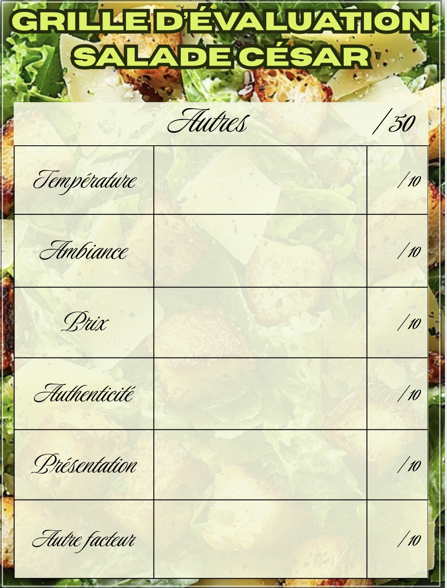
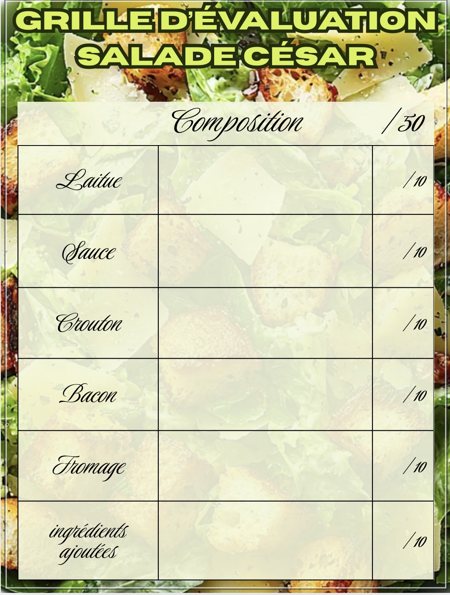
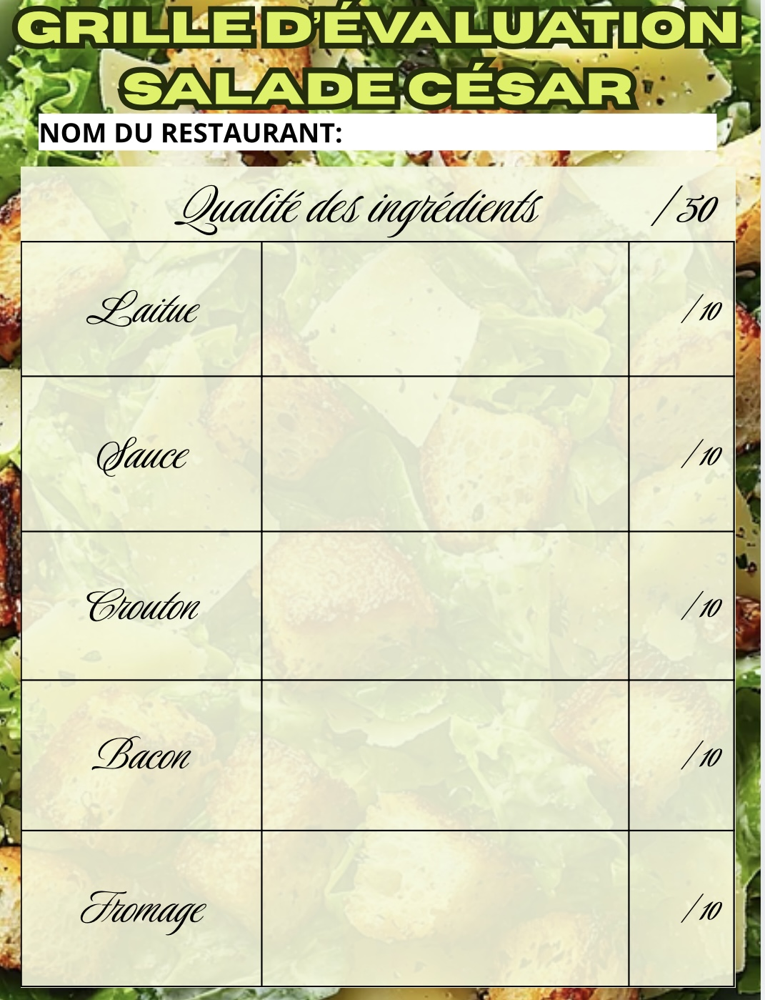
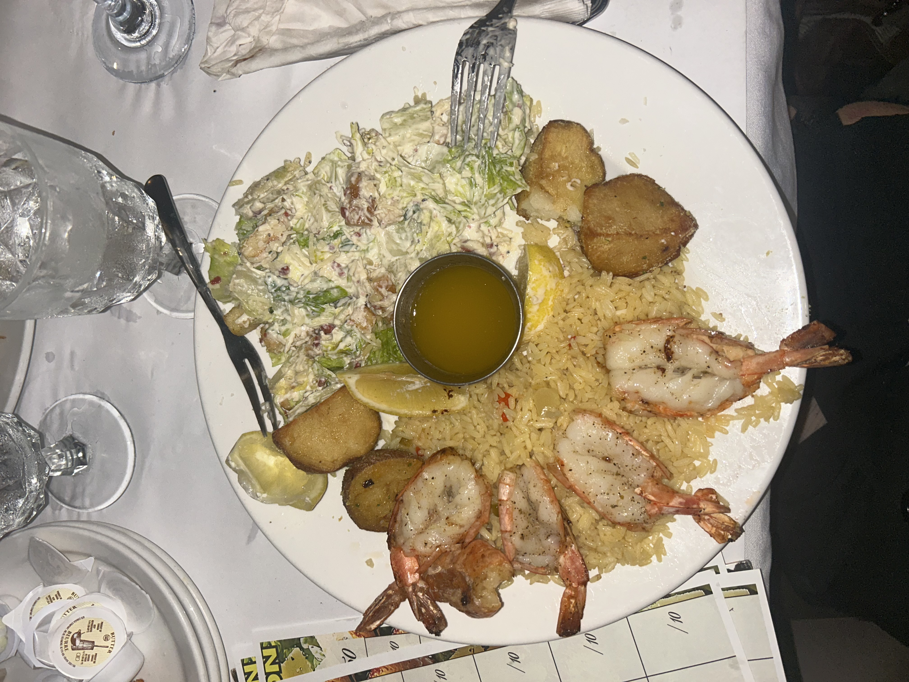

Salut et bienvenue !
Vous êtes sur le quartier général de la
Ligue de salade César de Rimouski
, là où la laitue, la sauce et le croûton sont pris très au sérieux.
★ SITE EN CONSTRUCTION — RESTEZ À L'ÉCOUTE ★
📋 LA GRILLE D'ÉVALUATION
L'évaluation est répartie en trois grandes catégories, chacune notée sur 50 points, pour un total possible de 150 points .
| Catégorie | Critères | Points |
|---|---|---|
| Composition | Laitue, sauce, croûton, bacon, fromage, ingrédients ajoutés | 50 |
| Qualité des ingrédients | Laitue, sauce, croûton, bacon, fromage | 50 |
| Autres | Température, ambiance, prix, authenticité, présentation, autre facteur | 50 |
Chaque critère est évalué sur 10 points. Les feuilles originales sont visibles dans la galerie ci-dessous.
📸 GALERIE DES PREUVES






🏆 LE CLASSEMENT
🚧 CLASSEMENT OFFICIEL À VENIR 🚧
Les résultats seront publiés après compilation des fiches de dégustation.
Les résultats seront publiés après compilation des fiches de dégustation.
Merci de soutenir la recherche, le développement et la dégustation de la salade César parfaite.